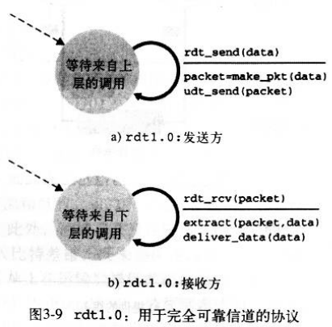

1. 可靠数据传输协议（reliable data transfer protocol）
4. 状态转换：
可靠数据传输协议可能建立在不可靠的信道之上，因此给协议的指定增加了不少问题。


1.1 rdt1.0
它基于完全可信的信道来传输数据，传输的过程中不会出现比特错误或者丢包

1.2 rdt2.0
数据时再具有比特错误的信道上传输，为了保证数据的正确传输，引入了“自动重传协议”，通过以下三种辅助协议来处理比特错误：
1）差错检测：传递校验和
2）接收方反馈：接收方正确接收数据包后发送 ACK或者NACK包来反馈数据包中的状况
3）重传：接收方收到错误的包时，发送方重传刚才发送的分组
发送方只有在收到接收方的确认包后才能再次发送新的数据到接收方，因此也称它为“停等协议”
但是如果接收方收到有错误的ACK时也可能重传分组，这样就可能向网络中引入了“冗余分组”，为解决此问题，需要为分组添加编号信息。由接收方来确定新到的分组是否为冗余分组（rdt2.1）。
rdt2.2实现了不需要发送NACK包即可确认包错误的协议，与rdt2.1的细微差别是需要在ACK包中引入确认的组序号，来标示接收方已经正确接收了某编号的分组（问题：确认序列号的大小，如ACK 10， 是否表示10以前的分组都正确接收了？如果来了<10的报文就作为冗余分组来处理？）
1.3 rdt 3.0
在具有比特传输错误，丢包的信道上实现可靠传输。关键问题就是：如何确定丢包了，以及丢包了改如何处理？
丢包后的处理我们可以参考rdt2系列协议。
对于确定丢包：发送方可以明智的选择一个等待时间，如果在此段时间内没有收到接收方的确认报文，那么发送方虽然不能担保一定丢包，但是有丢包的可能，这时重传分组即可。引入的“冗余分组”问题再rdt2.1中已经解决。
对于等待的时间，可以选择为2*MSL
1.4 流水线可靠数据传输协议：
允许发送方同时发送多个报文段，而不用等到收到对应的确认报文后才发送下一个分组，提供了网络的利用率。
但是发送过程中可能出现错误，如何从错误中恢复呢，可以参考：回退N步和选择行重传。
2. TCP连接建立（三次握手）
TCP连接提供点对点的，全双工服务。（多播，对TCP来说是不可能的）
注意点：1）服务端在收到客户端的SYN报文后，就会为此TCP连接分配缓存和变量信息（SYN洪泛攻击）；
2）客户端在收到服务端的SYNACK报文后，也会为此连接准备缓存和变量。
3）握手的过程中也可能出现丢包的可能性，因此实际的握手过程会比较复杂一些，想rdt3.0协议描述的那样（超时，重传）。握手过程中的报文信息依赖与协议rdt3.0的描述，传递的有ISN号，ACK分组号信息。
4）如果要详细的分析连接建立过程，可以参考数据报文是如果在网络中传输的，考虑TCP采取的拥塞控制，流控制，安全传输对它的影响。
应用层的数据都是先放到TCP连接的发送缓存的，然后传输层是每次从缓存中取MSS（Maximum Segment Size，最大传输报文长度）自己数据，添加TCP首部，IP首部等信息发送到链路层传输的。
MTU（Maximum transmission unit，最大传输单元）：是由链路层可以传输的最大数据帧决定的。一般为1460， 536,512 字节，MSS是根据MTU来确定的。
（问题：TCP的两端是怎么就MSS达成一致的？）
3. 关闭TCP连接（四次挥手）
注意：TIME_WAIT状态使得主动关闭方可以重传确认ACK报文，防止ACK包的丢失
（被动关闭方在发送FIN=1后，应该会打开一个计时，来决定是否主动关闭方收到了此包，如果长时间没有收到ACK，会重传此FIN包，这是主动关闭方还在TIME_WAIT状态，可以再对此FIN包确认，所以至少也要1.5MSL，这都是经验值。当然被动关闭方在进入last_ack状态后，有个最长等待时间，它不会一直这么重传等待下去的，超过一定时间后即使没有收到ACK，也会进入到CLOSED状态的。）
问题：
1）为什么TIME_WAIT时间为2MSL?
MSL是一个数据报在网络中单向发出到认定丢失的时间，一个数据报有可能在发送途中或是其响应过程中成为残余数据报，确认一个数据报及其响应的丢弃的需要两倍的MSL
2）连接关闭后（CLOSED），网络中可能还存在有发送方发出的数据，此时由建立了同IP，端口号的连接，接收端如何识别网络中的这些数据时上一次连接的遗留数据呢？
当然这也是TCP协议设置一个TIME_WAIT状态的目的，但是为什么就能保证在2MSL中可以响应所有报文（处理或者丢弃）
问题的关键点是：接收端是如何废弃TCP分段的，发送端在收到所有已发片段的确认报文前可以关闭连接吗？
4. 状态转换：
参考文献【3】
5. 概念补充：
1.MSS(maximum segment size)
即最大分节大小，是TCP的选项之一。
TCP发送的SYN中带有这个选项，它通知对端它能接受的每个TCP分节中的最大数据量。
发送端TCP用接收到的MSS值作为所发送分节的最大大小。
在TCP的MSS选项中，MSS值是一个16位的字段，最大值为65535
可以利用setsockopt() 和getsockopt设置和获取TCP_MAXSEG来影响MSS
2.MSL(maximum segment lifetime)
即最大分节生命期，是IP数据包能在互联网中生存的最长时间
MSL在RFC建议值为2分钟，Berkeley的实现传统上使用30秒。
3.MTU(maximum transmission unit)
即最大传输单元，这个值由硬件规定也就是说不同的网络MTU不同。
IPv4要求的最小链路MTU是68字节；IPv6要求的最小链路MTU为1280字节
说明：当一个IP数据报将从某个接口发出时，如果它的大小超过相应链路的MTU，IPv4和IPv6都将执行
分片。如果IPv4头部的DF("不分片")位被设置，则该数据报将不能被执行分片，若其大小超过其外出链
路MTU，则产生一个ICMPv4的destination unreachable fragmentation needed but DF bit set出错消息
路径MTU：两个主机间的路径上的最小MTU称为路径MTU
参考文献：
【1】http://www.cnblogs.com/hnrainll/archive/2011/10/14/2212415.html
【2】http://old.blog.edu.cn/user4/259041/archives/2007/1979294.shtml
【3】http://www.360doc.com/content/12/0306/09/1429048_192130479.shtml